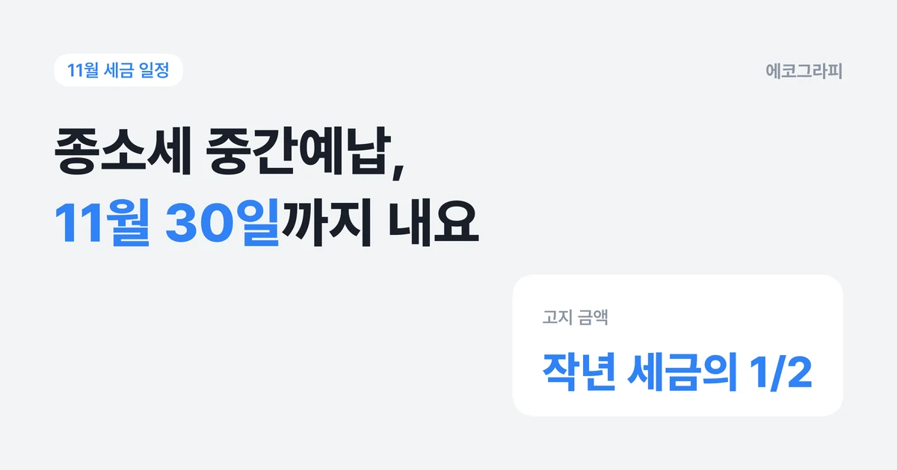
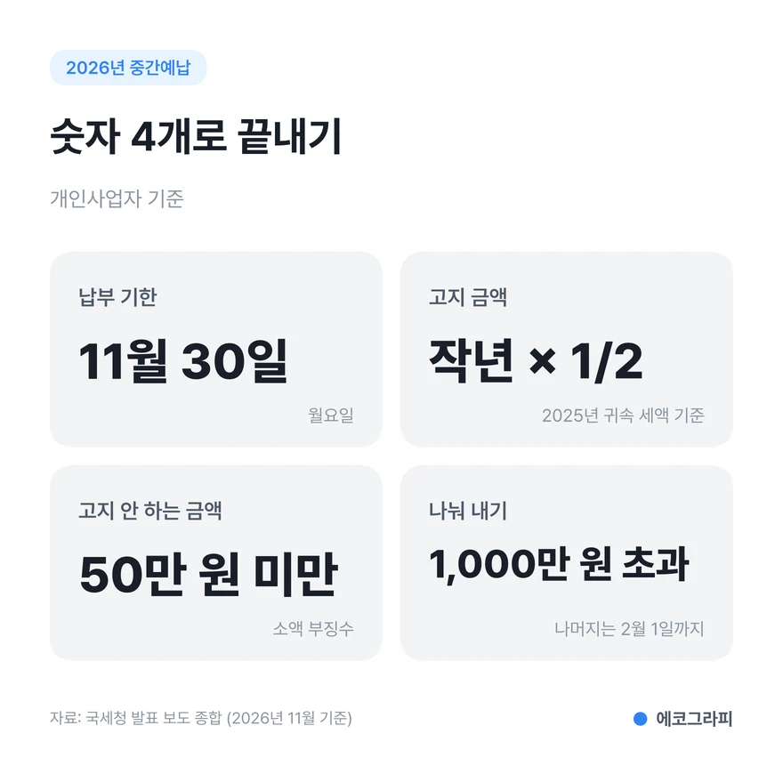
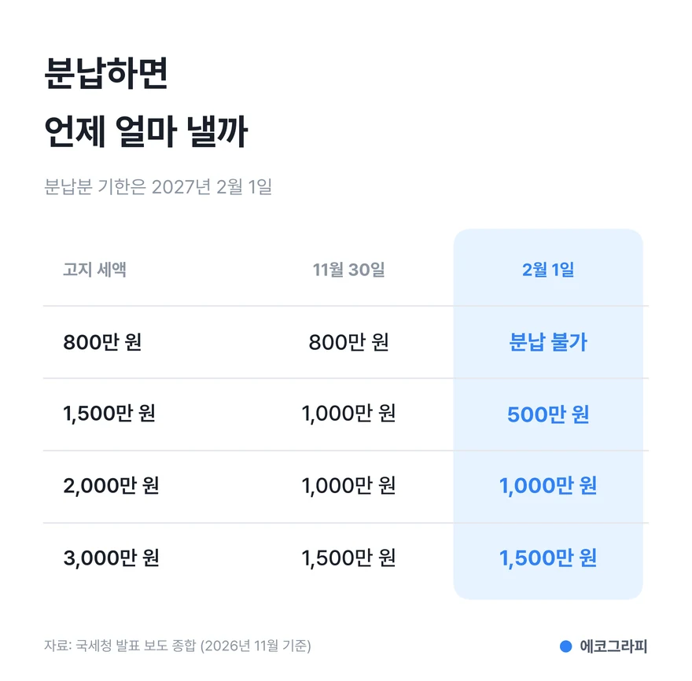
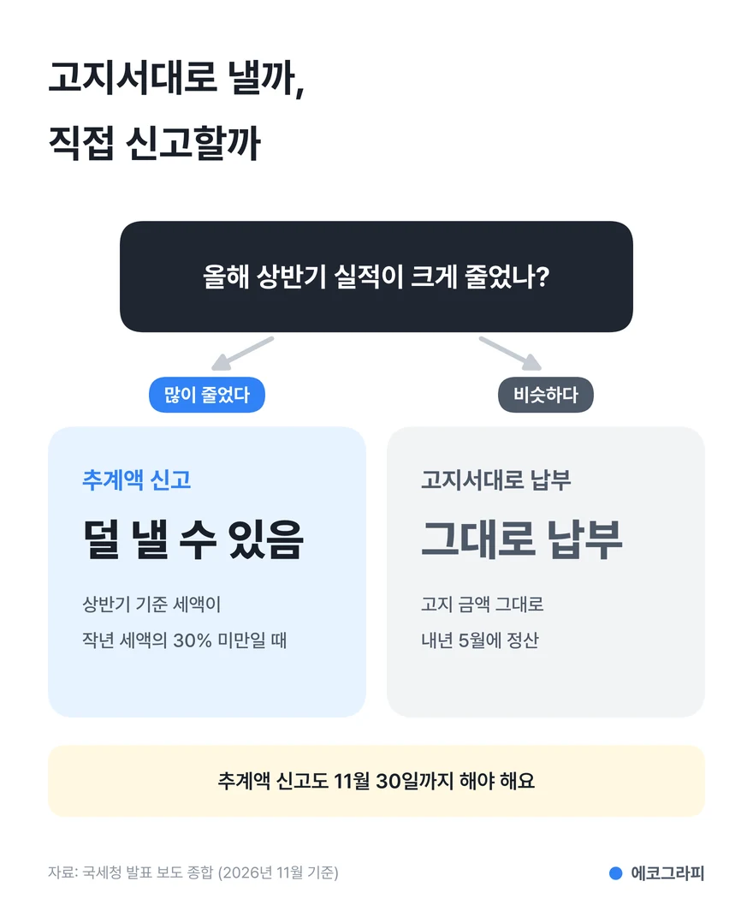
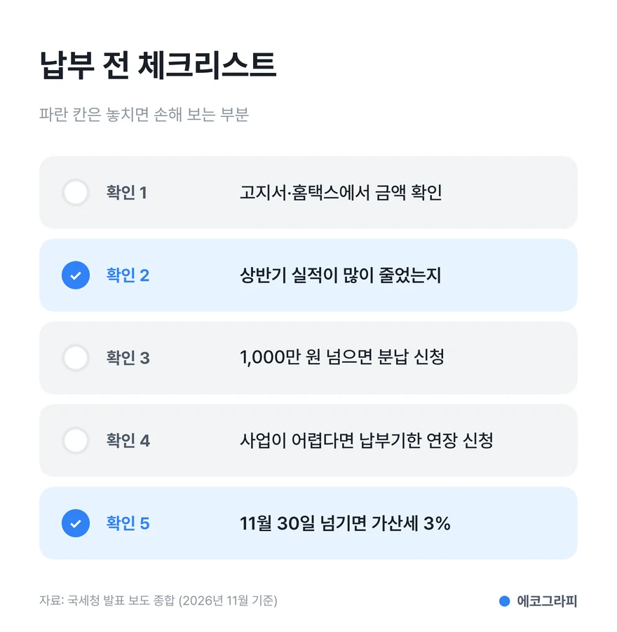

종합소득세는 원래 다음 해 5월에 한 번에 신고·납부해요. 그런데 한꺼번에 내면 부담이 크니까, 국세청이 11월에 절반쯤을 먼저 받는 제도가 중간예납이에요. 여기서 낸 돈은 내년 5월 확정신고 때 이미 낸 세금으로 빼 줘요. 세금이 늘어나는 게 아니라 나눠 내는 거예요.
국세청은 올해 개인사업자 약 154만 명에게 11월 초부터 고지서를 보냈어요.

대상은 종합소득이 있는 개인사업자예요. 고지 금액은 작년(2025년 귀속) 종합소득세의 2분의 1이에요. 작년 세금이 600만 원이었다면 300만 원이 고지돼요.
직장인은? 근로소득만 있다면 중간예납 대상이 아니에요. 부업으로 사업소득이 있고 작년에 종합소득세를 냈다면 고지서가 왔는지 홈택스에서 확인해 보세요.
고지 세액이 1,000만 원을 넘으면 일부를 2027년 2월 1일까지 미뤄 낼 수 있어요. 2,000만 원 이하면 1,000만 원을 넘는 금액을, 2,000만 원을 넘으면 절반까지 나눌 수 있어요. 이자는 붙지 않아요.

고지서는 작년 실적 기준이라 올해 장사가 안 됐다면 실제보다 많이 낼 수 있어요. 이럴 땐 올해 1~6월 실적으로 세금을 직접 계산해 신고할 수 있는데, 이걸 추계액 신고라고 해요.
조건은 상반기 기준으로 계산한 세액이 작년 세액의 30%에 못 미칠 때예요. 신고 기한도 11월 30일이에요. 계산한 금액이 50만 원 미만이면 신고만 하고 낼 돈은 없어요.

기한을 넘기면 납부지연가산세 3%에 더해 하루에 0.022%씩 붙어요. 사업이 크게 어렵거나 재해를 입었다면 홈택스나 세무서에 신청해 최대 9개월까지 납부기한을 연장받을 수 있어요.

지금 해볼 것: 홈택스(손택스) 로그인 → 납부·고지에서 고지 금액을 먼저 확인해 보세요. 납부 방법과 카드 수수료는 홈택스 안내를 확인하세요.
기한을 넘기면 가산세가 붙어요. 11월 30일까지 내거나, 사정이 어렵다면 납부기한 연장을 신청하는 게 좋아요.
고지서는 작년 기준이라 나와요. 상반기 실적으로 계산한 세액이 작년의 30% 미만이면 추계액 신고로 줄이거나 없앨 수 있어요.
내년 5월 확정신고 때 이미 낸 세금으로 빠져요. 많이 냈다면 그때 돌려받아요.
네. 납부할 때 분납할 금액을 정해서 신청해요. 홈택스에서 할 수 있어요.
※ 2026년 11월 기준으로 정리한 글입니다. 세율·제도는 바뀔 수 있으니 거래 전 증권사·국세청 안내를 한 번 더 확인하세요. 특정 종목·상품의 매수·매도 권유가 아닙니다.